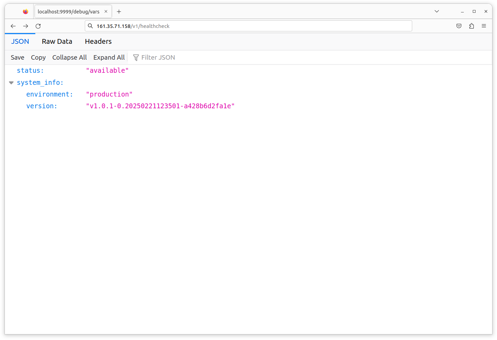
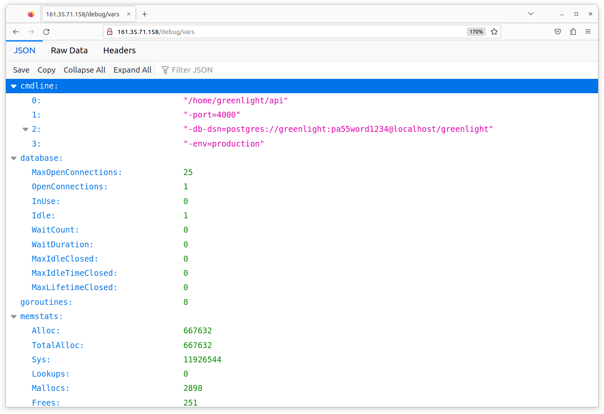
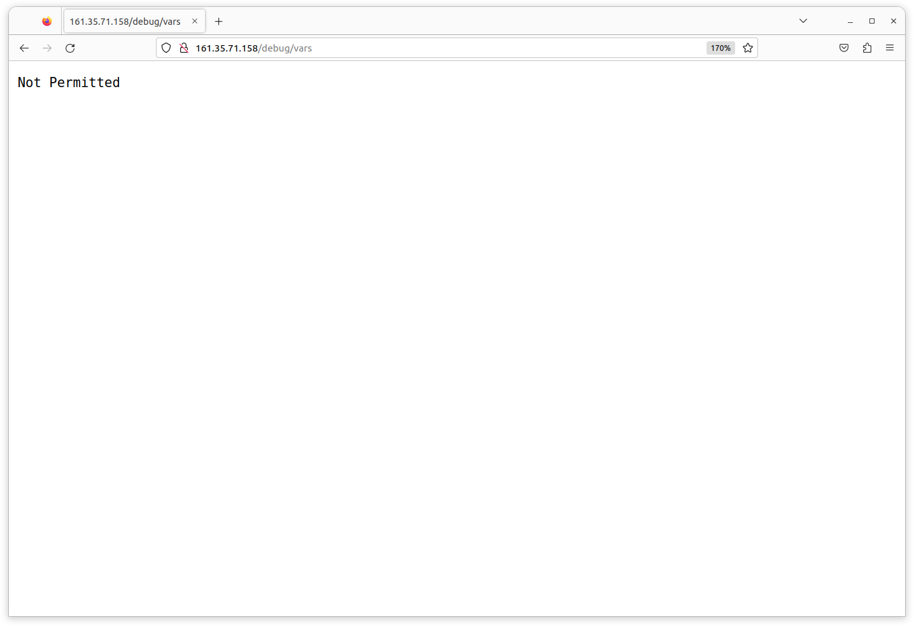
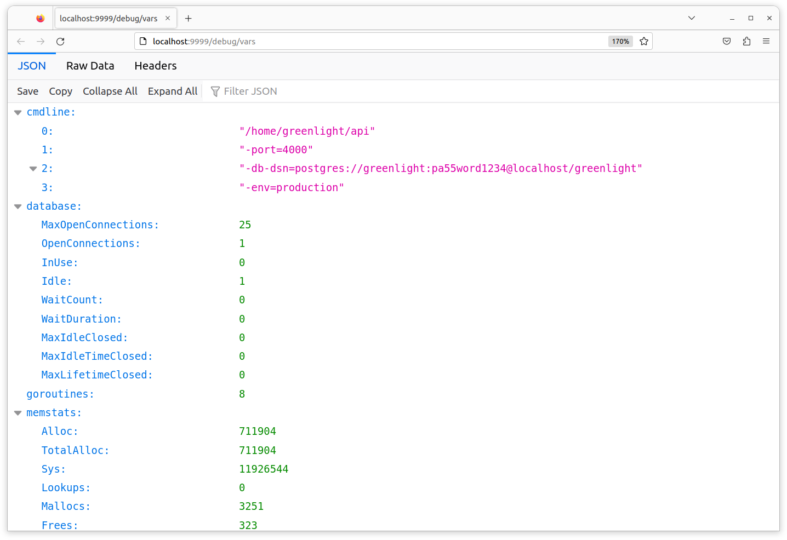
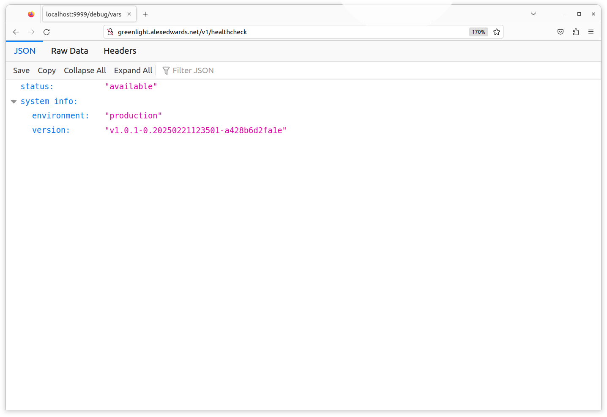
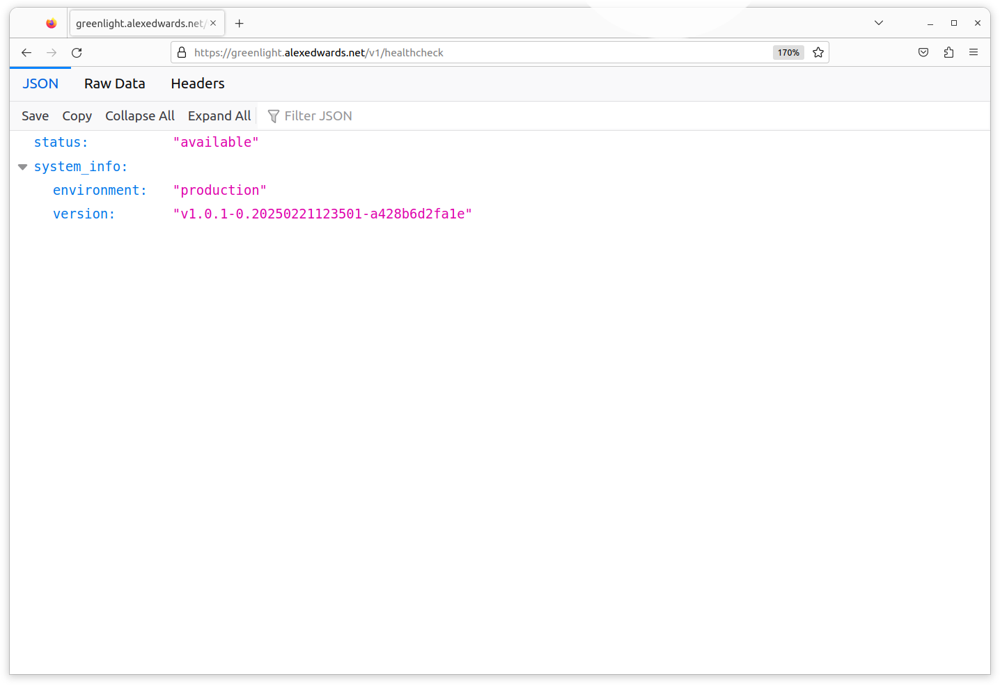
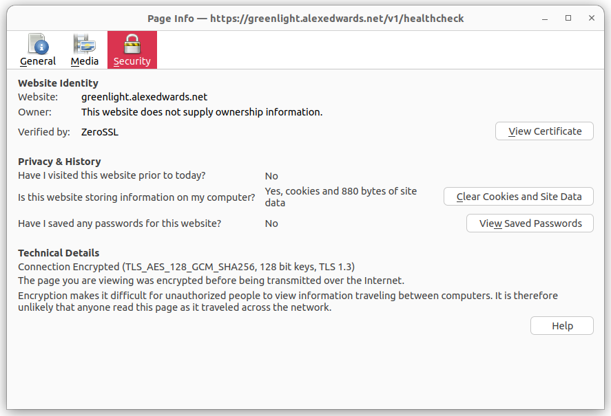

استفاده از Caddy به عنوان یک پروکسی معکوس
ما اکنون در موقعیتی قرار داریم که برنامه API Greenlight ما به عنوان یک background service روی droplet ما در حال اجرا است و روی پورت 4000 به درخواستهای HTTP گوش میدهد. همچنین Caddy به عنوان یک background service در حال اجرا است و روی پورت 80 به درخواستهای HTTP گوش میدهد.
بنابراین مرحله بعدی در تنظیم محیط production ما، پیکربندی Caddy برای عمل به عنوان یک reverse proxy و ارسال درخواستهای HTTP دریافتی به API ما است.
سادهترین راه برای پیکربندی Caddy، ایجاد یک Caddyfile است — که شامل مجموعهای از قوانین توصیفکننده عملکرد مورد نظر Caddy میباشد. اگر همراه ما هستید، لطفاً یک فایل جدید remote/production/Caddyfile در دایرکتوری پروژه خود ایجاد کنید:
$ touch remote/production/Caddyfile
و سپس محتوای زیر را اضافه کنید و مطمئن شوید آدرس IP را با آدرس droplet خود جایگزین کردهاید:
http://161.35.71.158 { reverse_proxy localhost:4000 }
همانطور که احتمالاً با دیدن آن حدس میزنید، این قانون به Caddy میگوید که میخواهیم به درخواستهای HTTP روی 161.35.71.158 گوش دهد و سپس به عنوان یک reverse proxy عمل کند و درخواست را به پورت 4000 روی ماشین محلی (جایی که API ما گوش میدهد) ارسال کند.
کار بعدی که باید انجام دهیم آپلود این Caddyfile به droplet و بازخوانی Caddy برای اعمال تغییرات است.
برای مدیریت این کار، بیایید rule production/deploy/api خود را بهروزرسانی کنیم. این از همان الگوی پایهای که در فصل قبلی برای آپلود فایل api.service استفاده کردیم پیروی میکند، اما به جای آن Caddyfile خود را به /etc/caddy/Caddyfile روی سرور کپی خواهیم کرد.
به این صورت:
# ==================================================================================== # # PRODUCTION # ==================================================================================== # production_host_ip = '161.35.71.158' ... ## production/deploy/api: deploy the api to production .PHONY: production/deploy/api production/deploy/api: rsync -P ./bin/linux_amd64/api greenlight@${production_host_ip}:~ rsync -rP --delete ./migrations greenlight@${production_host_ip}:~ rsync -P ./remote/production/api.service greenlight@${production_host_ip}:~ rsync -P ./remote/production/Caddyfile greenlight@${production_host_ip}:~ ssh -t greenlight@${production_host_ip} '\ migrate -path ~/migrations -database $$GREENLIGHT_DB_DSN up \ && sudo mv ~/api.service /etc/systemd/system/ \ && sudo systemctl enable api \ && sudo systemctl restart api \ && sudo mv ~/Caddyfile /etc/caddy/ \ && sudo systemctl reload caddy \ '
پس از اعمال این تغییر، rule را برای استقرار Caddyfile در production اجرا کنید:
$ make production/deploy/api
rsync -P ./bin/linux_amd64/api greenlight@"161.35.71.158":~
api
7,634,944 100% 70.67MB/s 0:00:00 (xfr#1, to-chk=0/1)
rsync -rP --delete ./migrations greenlight@"161.35.71.158":~
sending incremental file list
migrations/000001_create_movies_table.down.sql
28 100% 0.00kB/s 0:00:00 (xfr#1, to-chk=11/13)
migrations/000001_create_movies_table.up.sql
286 100% 279.30kB/s 0:00:00 (xfr#2, to-chk=10/13)
migrations/000002_add_movies_check_constraints.down.sql
198 100% 193.36kB/s 0:00:00 (xfr#3, to-chk=9/13)
migrations/000002_add_movies_check_constraints.up.sql
289 100% 282.23kB/s 0:00:00 (xfr#4, to-chk=8/13)
migrations/000003_add_movies_indexes.down.sql
78 100% 76.17kB/s 0:00:00 (xfr#5, to-chk=7/13)
migrations/000003_add_movies_indexes.up.sql
170 100% 166.02kB/s 0:00:00 (xfr#6, to-chk=6/13)
migrations/000004_create_users_table.down.sql
27 100% 26.37kB/s 0:00:00 (xfr#7, to-chk=5/13)
migrations/000004_create_users_table.up.sql
294 100% 287.11kB/s 0:00:00 (xfr#8, to-chk=4/13)
migrations/000005_create_tokens_table.down.sql
28 100% 27.34kB/s 0:00:00 (xfr#9, to-chk=3/13)
migrations/000005_create_tokens_table.up.sql
203 100% 198.24kB/s 0:00:00 (xfr#10, to-chk=2/13)
migrations/000006_add_permissions.down.sql
73 100% 71.29kB/s 0:00:00 (xfr#11, to-chk=1/13)
migrations/000006_add_permissions.up.sql
452 100% 441.41kB/s 0:00:00 (xfr#12, to-chk=0/13)
rsync -P ./remote/production/api.service greenlight@"161.35.71.158":~
api.service
1,266 100% 0.00kB/s 0:00:00 (xfr#1, to-chk=0/1)
rsync -P ./remote/production/Caddyfile greenlight@"161.35.71.158":~
Caddyfile
293 100% 0.00kB/s 0:00:00 (xfr#1, to-chk=0/1)
ssh -t greenlight@"161.35.71.158" '\
migrate -path ~/migrations -database $GREENLIGHT_DB_DSN up \
&& sudo mv ~/api.service /etc/systemd/system/ \
&& sudo systemctl enable api \
&& sudo systemctl restart api \
&& sudo mv ~/Caddyfile /etc/caddy/ \
&& sudo systemctl reload caddy \
'
no change
[sudo] password for greenlight:
Connection to 161.35.71.158 closed.
باید ببینید که Caddyfile کپی شده و بازخوانی بدون هیچ خطایی اجرا میشود.
در این مرحله میتوانید http://<your_droplet_ip>/v1/healthcheck را در مرورگر وب خود باز کنید و باید ببینید که درخواست با موفقیت از Caddy به API ما ارسال شده است. به این صورت:

مسدود کردن دسترسی به معیارهای برنامه
در حالی که در مرورگر هستیم، بیایید به endpoint GET /debug/vars برویم که معیارهای برنامه ما را نمایش میدهد. باید پاسخی مشابه این ببینید:

همانطور که قبلاً اشاره کردیم، در دسترس بودن عمومی این اطلاعات حساس واقعاً ایده خوبی نیست.
خوشبختانه، مسدود کردن دسترسی به این بخش با اضافه کردن یک respond directive جدید به Caddyfile بسیار آسان است. به این صورت:
http://161.35.71.158 { respond /debug/* "Not Permitted" 403 reverse_proxy localhost:4000 }
با این directive جدید، به Caddy دستور میدهیم که برای تمام درخواستهایی که مسیر URL آنها با /debug/ شروع میشود، پاسخ 403 Forbidden ارسال کند.
این تغییر را دوباره در production مستقر کنید و هنگامی که صفحه را در مرورگر وب خود بازخوانی میکنید، باید ببینید که اکنون مسدود شده است.
$ make production/deploy/api

اگرچه معیارها دیگر به صورت عمومی در دسترس نیستند، همچنان میتوانید با اتصال به droplet از طریق SSH و ارسال درخواست به http://localhost:4000/debug/vars به آنها دسترسی داشته باشید.
$ make production/connect
greenlight@greenlight-production:~$ curl http://localhost:4000/debug/vars
{
"cmdline": ...,
"database": ...,
"goroutines": 7,
"memstats": ...,
"timestamp": 1618820037,
"total_processing_time_μs": 1305,
"total_requests_received": 8,
"total_responses_sent": 7,
"total_responses_sent_by_status": {"200": 3, "404": 4},
"version": "v1.0.0-1-gf27fd0f"
}
یا به طور جایگزین، میتوانید یک SSH tunnel به droplet باز کنید و آنها را با استفاده از مرورگر وب روی ماشین محلی خود مشاهده کنید. به عنوان مثال، میتوانید یک SSH tunnel بین پورت 4000 روی droplet و پورت 9999 روی ماشین محلی خود با اجرای دستور زیر باز کنید (مطمئن شوید هر دو آدرس IP را با آدرس IP droplet خود جایگزین کردهاید):
$ ssh -L :9999:161.35.71.158:4000 greenlight@161.35.71.158
در حالی که آن tunnel فعال است، باید بتوانید http://localhost:9999/debug/vars را در مرورگر وب خود باز کنید و معیارهای برنامه خود را ببینید، به این صورت:

استفاده از یک نام دامنه
برای مرحله بعدی استقرار خود، Caddy را طوری پیکربندی خواهیم کرد که بتوانیم از طریق یک نام دامنه به droplet خود دسترسی داشته باشیم، به جای نیاز به استفاده از آدرس IP.
اگر میخواهید در این مرحله از کتاب همراه ما باشید، به یک نام دامنه و توانایی بهروزرسانی رکوردهای DNS برای آن نام دامنه نیاز دارید. اگر در حال حاضر نام دامنهای در دسترس ندارید، میتوانید از طریق سرویس Freenom یکی به صورت رایگان دریافت کنید.
من از دامنه greenlight.alexedwards.net در کد نمونه اینجا استفاده خواهم کرد، اما اگر همراه ما هستید باید آن را با دامنه خود جایگزین کنید.
اولین کاری که باید انجام دهید پیکربندی رکوردهای DNS برای نام دامنه خود به گونهای است که شامل یک رکورد A باشد که به آدرس IP droplet شما اشاره کند. بنابراین در مورد من، رکورد DNS به این صورت خواهد بود:
A greenlight.alexedwards.net 161.35.71.158
پس از ایجاد رکورد DNS، وظیفه بعدی بهروزرسانی Caddyfile برای استفاده از نام دامنه به جای آدرس IP droplet است. آن را به این صورت جایگزین کنید (به یاد داشته باشید greenlight.alexedwards.net را با نام دامنه خود جایگزین کنید):
http://greenlight.alexedwards.net { respond /debug/* "Not Permitted" 403 reverse_proxy localhost:4000 }
و سپس Caddyfile را دوباره به droplet خود مستقر کنید:
$ make production/deploy/api
پس از انجام این کار، اکنون باید بتوانید از طریق نام دامنه خود به API دسترسی داشته باشید. http://<your_domain_name>/v1/healthcheck را در مرورگر خود باز کنید:

فعالسازی HTTPS
اکنون که یک نام دامنه تنظیم کردهایم، میتوانیم از یکی از ویژگیهای اصلی Caddy استفاده کنیم: automatic HTTPS.
Caddy به طور خودکار تأمین و تمدید گواهینامههای TLS دامنه شما از طریق Let's Encrypt یا ZeroSSL (بسته به در دسترس بودن) و همچنین انتقال تمام درخواستهای HTTP به HTTPS را مدیریت میکند. راهاندازی آن ساده، بسیار قوی و صرفهجویی در هزینههای پیگیری دستی تمدید گواهینامهها است.
برای فعالسازی این قابلیت، فقط باید Caddyfile خود را بهروزرسانی کنیم تا به این صورت درآید:
# Set the email address that should be used to contact you if there is a problem with # your TLS certificates. { email you@example.com } # Remove the http:// prefix from your site address. greenlight.alexedwards.net { respond /debug/* "Not Permitted" 403 reverse_proxy localhost:4000 }
برای آخرین بار، این بهروزرسانی Caddyfile را به droplet خود مستقر کنید…
$ make production/deploy/api
و سپس هنگامی که صفحه را در مرورگر وب خود بازخوانی میکنید، باید ببینید که به طور خودکار به نسخه HTTPS صفحه هدایت شده است.

اگر از Firefox استفاده میکنید، همچنین میتوانید با فشار دادن Ctrl+i اطلاعات صفحه را در مرورگر خود مشاهده کنید. باید مشابه این باشد:

از اینجا میتوانیم ببینیم که اتصال با موفقیت با استفاده از TLS 1.3 و مجموعه رمز TLS_AES_128_GCM_SHA256 رمزگذاری شده است.
در نهایت، اگر میخواهید، میتوانید از curl برای ارسال یک درخواست HTTP به برنامه استفاده کنید. باید ببینید که یک 308 Permanent Redirect به نسخه HTTPS برنامه صادر میشود، به این صورت:
$ curl -i http://greenlight.alexedwards.net HTTP/1.1 308 Permanent Redirect Connection: close Location: https://greenlight.alexedwards.net/ Server: Caddy Date: Mon, 19 Apr 2021 08:36:20 GMT Content-Length: 0
اطلاعات تکمیلی
مقیاسبندی زیرساخت
قبل از راهاندازی یک سرویس جدید، انجام یک آزمایش فکری و پرسیدن این سؤال از خود معمولاً مفید است: با افزایش ترافیک به سرویس چه اتفاقی میافتد؟ چگونه آن را مدیریت میکنم؟
برای این پروژه، مسیر مشخصی وجود دارد که میتوانیم برای مقیاسبندی و تطبیق زیرساخت با رشد دنبال کنیم. به طور بسیار کلی، این مسیر تقریباً به این صورت است:
- استفاده از یک droplet کمتوان واحد که Caddy، PostgreSQL و برنامه Go را اجرا میکند. این همان چیزی است که در حال حاضر داریم.
- ↓ ارتقای droplet در صورت نیاز به CPU و/یا حافظه بیشتر.
- ↓ انتقال PostgreSQL به یک droplet جداگانه، یا استفاده از یک managed database.
- ↓ ارتقای dropletها/managed databaseها در صورت نیاز به CPU و/یا حافظه بیشتر.
- اگر droplet اجرای برنامه Go یک تنگنا باشد:
- ↓ پروفایل و بهینهسازی کد برنامه Go خود.
- ↓ اجرای برنامه Go روی چندین droplet، در پشت یک load balancer.
- اگر دیتابیس PostgreSQL یک تنگنا باشد:
- ↓ پروفایل و بهینهسازی تنظیمات دیتابیس و queryهای دیتابیس.
- ↓ در صورت مناسب بودن، کش کردن نتایج queryهای پرهزینه/مکرر دیتابیس.
- ↓ در صورت مناسب بودن، انتقال برخی عملیات به یک in-memory database مانند Redis.
- ↓ شروع استفاده از database replicaهای فقط-خواندنی برای queryها در صورت امکان.
- ↓ شروع sharding دیتابیس.
در پروژههای دیگر، این مراحل و ترتیب آنها احتمالاً متفاوت خواهد بود. و در برخی موارد، ممکن است بر اساس الزامات تجاری، برآوردهای ترافیک و نتایج تست بار، منطقی باشد که مستقیماً به یک معماری پیچیدهتر بپردازیم.
اما اختصاص دادن لحظهای کوتاه برای انجام چنین آزمایش فکری خوب است. اگر بتوانید مسیر مشخصی ببینید، این اطمینان مثبتی فراهم میکند که رشد میتواند بدون بهینهسازی زودهنگام زیرساخت یا برنامه مدیریت شود. در حالی که اگر نتوانید مسیر مشخصی برای مدیریت رشد ببینید، این مشکل بالقوهای را برجسته میکند و ممکن است منطقی باشد انتخابهای زیرساخت خود را بازنگری کنید.